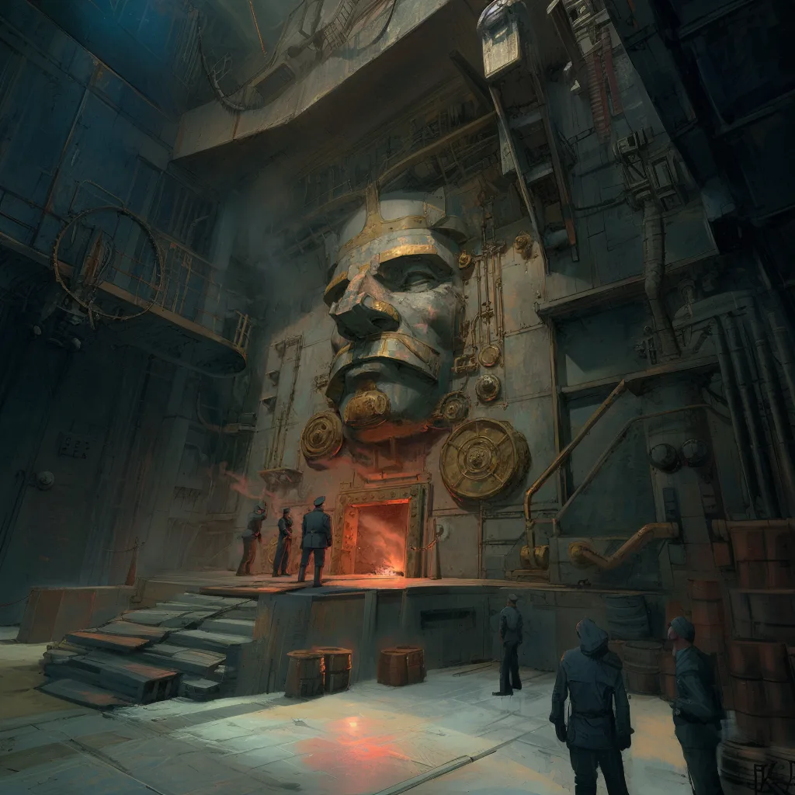

The tank has a mind of its own: a giant brass face on the wall, with a personality you build from punch-card shards. You talk to it, and it talks back.


The idea
The heart of the game is a thinking war tank, raised on poetry and opera. You don't just drive it: you live inside it, and you talk to it. Somewhere in the hull is its face, a huge brass officer on the wall, with a red glow in its eyes and mouth. You walk up to it and talk. It answers in its own voice, with its own moods, and it has opinions about you, about the hills and about being shot at.
- Its mind is made of personality shards: steampunk punch cards with a crystal in them, slotted into a rack next to the face. Each shard is a fragment of someone's memory (a merchant, a soldier, a machine) and carries a personality: Grump, Diva, Coward, Depressed... The tank's character is the mix of the shards you put in.
- Shards are loot. Pull one out and the tank loses that part of itself, and the skills it learned with it. Rare shards are worth fighting for.
- Talk by typing or by microphone. Most school computers have no microphone, and a game needs a typed way in anyway.
- It has feelings. Anger, fear, pride and sadness change its face, its eyes and its lights. Shoot it and it gets scared. Stand too close and it snaps at you.
- The dream: the face of authority breaking down in a battle and begging the crew to hide him from the enemy.
What is built (2026 Nov 6)
- The brass officer face: eyes that follow you, blinking, a moving jaw, a cigar, red eye beams.
- A metal voice: the AI's speech run through a filter, so it sounds like it comes from inside a hull.
- Moods (anger, fear, pride, sadness) that change the face.
- Personality shards with personalities and memories, a rack where you can see them in their slots, with the crystal in the personality's colour.
- Talking: press E at the face to open a screen with the slots, your shards and a text box (or hold to talk). It answers in character, through the Player2 AI.
- In multiplayer, everyone on the tank hears the same answer.
History
- 2026 Oct 15: Put in the work order, after multiplayer and damage.
- 2026 Nov 6: The face, the voice, moods, personality shards and talking were built and tried in a test level. The officer said his first lines with the Player2 voice.
- 2026 Nov 8: Concept art of the face in its engine hall, to show how it will look in the game.